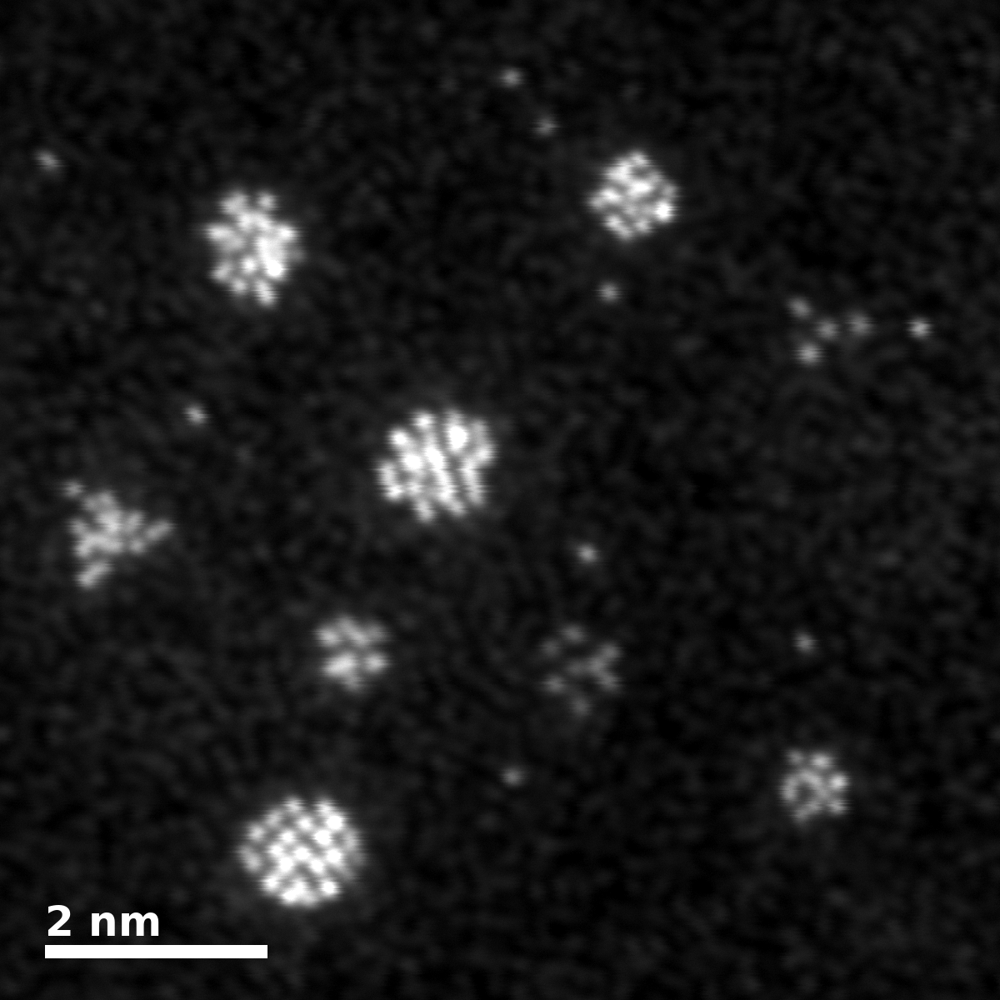

De estructuras atómicas a imágenes STEM de resolución atómica basadas en modelos
QADMAY convierte coordenadas atómicas tridimensionales en imágenes sintéticas ARM-TEM, HRTEM y STEM, considerando orientación, formación de imagen, aberraciones, efecto del soporte y ruido.

Estructura → proyección → imagen
Gira el cluster y explora la imagen con los controles.
Capacidades principales
Estructura atómica 3D
Reconstrucción a partir de coordenadas atómicas x, y, z.
Orientaciones múltiples
Rotación tridimensional independiente de cada estructura.
Proyección 3D → 2D
Proyecciones atómicas físicamente plausibles a lo largo del haz.
TEM / HRTEM / STEM
Contraste sintético para distintos modos de microscopía.
CTF y PSF
Transferencia de contraste y respuesta espacial de la imagen.
Aberraciones
Desenfoque, aberración esférica residual y astigmatismo débil.
Simulación de ruido
Generación de ruido de Poisson e instrumental.
Soportes amorfos
Fondos realistas y variaciones locales de contraste.
Poblaciones de clusteres
Muchas estructuras en el mismo campo de visión.
Salida de alta resolución
Micrografías listas para publicación con barra de escala automática.
Galería de salidas
Micrografías generadas por QADMAY a partir de coordenadas de clusteres AuPt sobre carbono amorfo. Haz clic en un cuadro para ampliarlo.
Átomos brillantes sobre fondo oscuro. Modo por defecto, desenfoque entre 1 y 3 nm.
Contraste de fase: átomos oscuros y la textura de gusanos del carbono amorfo. Desenfoque −5 a −8 nm, Cs residual 0.0005 mm.
Apoyada en el soporte, aleatoria, eje de zona o fija. Es el parámetro que más cambia el aspecto.
Aplicaciones
Conectar modelos atomísticos con microscopía electrónica
En lugar de simplemente colocar átomos sobre un fondo oscuro, QADMAY introduce los elementos que definen una imagen de microscopía: orientación, estructura proyectada, transferencia de contraste, respuesta espacial, aberraciones, soporte y ruido.
También permite la comparación directa entre modelos estructurales atomísticos y observaciones TEM experimentales.
- No es multislice: aproximaciones de objeto de fase débil e imagen incoherente.
- Los factores de dispersión siguen un modelo de potencia Z^γ, no la parametrización completa de Kirkland o Peng.
- Las imágenes generadas son simulaciones. Identifícalas siempre como tales en publicaciones y presentaciones.
¿Quieres usar QADMAY con tus propias estructuras?
Envíame tus coordenadas (.xyz, .log de Gaussian, .gjf) y te ayudo a ponerlo en marcha. Uso libre académico.